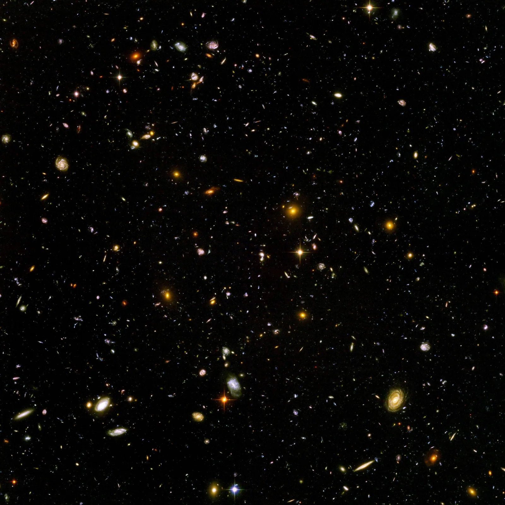

The evolution of the universe
Why have the spectral lines of distant galaxies shifted towards red, and the more so the farther away the galaxy is?
Prior knowledge
- An atom absorbs and emits only photons whose energy is the difference between two energy levels, so every element has its own spectral lineschapter Spectra reveal the energy levels of atoms
- The fusion of light nuclei releases energy, because the binding energy per nucleon grows up to ironchapter Fission, fusion and nuclear power
Core path: follow the steps in order. Tasks marked Optional give extra practice. Optional tasks: 4.
Think about it
The spectrum of the light of a distant galaxy shows the familiar absorption lines of hydrogen, but they are in the wrong places. The red line, whose wavelength in the laboratory is $656.3\,\text{nm}$, appears at a wavelength of $669.4\,\text{nm}$, and the blue-green line has shifted from $486.1\,\text{nm}$ to $495.8\,\text{nm}$. The shifts are of different sizes, but each is $2.0\,\%$ of the wavelength of the line itself. The lines of almost every galaxy have shifted in the same way to longer wavelengths.
What does the shift of the lines tell about the galaxies, and what can be concluded from it about the past of the universe?
Optional Recap: absorption lines
Predict
Make your predictions before investigating 2 questions
Prediction 1: redshift and distance
Prediction 2: are we at the centre?
Investigate
Choose a galaxy. Compare its hydrogen lines with the laboratory lines, and collect in the graph the speeds of the galaxies as a function of distance. Finally fit a line through the origin to the points.
Simulation
How to use
Choose a galaxy $1$–$8$ from the Galaxy menu. On the map the galaxy is circled, and a light wave travels from it to the Milky Way, its wavelength stretching on the way. In the spectrum picture, the absorption lines of hydrogen in the laboratory are above and the same lines in the light of the galaxy below; the dashed line shows the shift of the red $\text{H}\alpha$ line. The readout shows the distance of the galaxy $d$, the wavelength and shift $\Delta\lambda$ of the $\text{H}\alpha$ line, the redshift $z$ and the speed $v$. Every galaxy you choose leaves a point $(d, v)$ in the graph. The slider Slope of the line $H_0$ turns the line $v = H_0\,d$ through the origin: adjust it to pass through the middle of the points. Speed changes only the motion of the light wave, and Clear the graph removes the points.
Assumptions of the model
The galaxies and their distances are invented, but their speeds follow the Hubble–Lemaître law, to which a motion of its own of a few hundred kilometres per second has been added for each galaxy. The distances are assumed to be known accurately, as if they had been measured, for example, from the brightness of supernovae. The redshifts are small, under $0.1$, so the speed is $v = cz$. The map shows the directions and distances of the galaxies in roughly the right proportion, and the stretching of the light wave is exaggerated eightfold. The readings are values of the model and not measurements.
How the calculation works
Every hydrogen line appears at the wavelength $\lambda = \lambda_0\,(1 + z)$, so the redshift is $z = \tfrac{\Delta\lambda}{\lambda_0}$ and the speed $v = cz$, where $c = 2.998 \cdot 10^{5}\,\text{km/s}$. The laboratory wavelengths are $\text{H}\alpha$ $656.3\,\text{nm}$, $\text{H}\beta$ $486.1\,\text{nm}$, $\text{H}\gamma$ $434.0\,\text{nm}$ and $\text{H}\delta$ $410.2\,\text{nm}$. From the slope of the line, the time $\tfrac{1}{H_0}$ is calculated by substituting $1\,\text{Mpc} = 3.086 \cdot 10^{19}\,\text{km}$ and $1\,\text{a} = 3.156 \cdot 10^{7}\,\text{s}$; it is shown in billions of years.
Experiment: redshift and distance
Test prediction 1. Choose the galaxies one at a time and record for each the distance $d$, the shift of the $\text{H}\alpha$ line $\Delta\lambda$, the redshift $z$ and the speed $v$, for at least five galaxies, preferably all eight. See how the points settle in the graph.
Initial state: galaksi: galaxy 1, $H_0$ = $50\,\text{km/s/Mpc}$. Kept constant: nothing. Varied: galaksi.
| galaksi | $d$ $(\text{Mpc})$ | $\Delta \lambda$ $(\text{nm})$ | $z$ | $v$ $(\text{km/s})$ |
|---|
Adjust the slider $H_0$ until the line passes through the middle of the points, so that about as many points are left on each side of the line.
What is the Hubble constant given by your fit, in the unit $\tfrac{\text{km/s}}{\text{Mpc}}$?
Hint 1: a guiding question
The line must pass through the origin, because our own galaxy ($d = 0$) has no recession speed.
Hint 2: what is the connection
Do not try to hit a single point: the most distant galaxies determine the slope most accurately, because their own motion is small compared with the speed of the expansion.
Hint 3: an intermediate step
Check your fit by calculating the ratio of the speed to the distance of the most distant galaxy: $19\,030\,\text{km/s} : 275\,\text{Mpc}$.
Show the solution
Given
the values of the model for the eight galaxies of the simulation, for example galaxy 4: $d = 110\,\text{Mpc}$, $v = 7560\,\text{km/s}$ and galaxy 8: $d = 275\,\text{Mpc}$, $v = 19\,030\,\text{km/s}$
Asked
the Hubble constant $H_0$, that is, the slope of the fitted line in the unit $\tfrac{\text{km/s}}{\text{Mpc}}$
Principle
The graph of the Hubble–Lemaître law $v = H_0\,d$ is a line through the origin, because at distance zero there is no recession speed. In real data sets the measured points do not usually lie exactly on the same line; here the scatter comes from the own motion of the galaxies. This is why the slope is read from the fitted line and not from two adjacent points.
Reading the graph
When $H_0$ is about $70\,\tfrac{\text{km/s}}{\text{Mpc}}$, the line passes through the middle of the points: galaxies 1, 3, 5 and 7 are slightly above the line and galaxies 2, 4, 6 and 8 slightly below. From the line we read the point at distance $d = 200\,\text{Mpc}$, where $v = 14\,000\,\text{km/s}$.
Formula
$v = H_0\,d$, so $H_0 = \dfrac{v}{d}$
Conversions
None needed: the speed is in kilometres per second and the distance in megaparsecs, as in the unit asked.
Substitution
Answer
about $70\,\tfrac{\text{km/s}}{\text{Mpc}}$; a fit by eye gives two significant figures, and a difference of a few units is acceptable.
Reasonableness
For the most distant galaxy $19\,030 : 275 \approx 69$ and for galaxy 4 $7560 : 110 \approx 69$, close to the fit. The least-squares line through the origin gives $69.8\,\tfrac{\text{km/s}}{\text{Mpc}}$. In the readout $\tfrac{1}{H_0} \approx 14 \cdot 10^{9}\,\text{a}$, close to the age of the universe, $13.8$ billion years.
Conclusion: the Hubble–Lemaître law
Write, based on your table and the graph: How does the speed of a galaxy depend on its distance? Why are the points not exactly on a line? What do the slope $H_0$ of your fitted line and the time $\tfrac{1}{H_0}$ tell about the universe?
Model answer
In the values of the model the speed grows in direct proportion to the distance: galaxy 2 ($45\,\text{Mpc}$) recedes at $2840\,\text{km/s}$, galaxy 4 ($110\,\text{Mpc}$) at $7560\,\text{km/s}$ and galaxy 8 ($275\,\text{Mpc}$) at $19\,030\,\text{km/s}$. The points are close to the line $v = H_0\,d$ through the origin, whose slope is about $70\,\tfrac{\text{km/s}}{\text{Mpc}}$. The points deviate from the line by a few hundred kilometres per second, because the galaxies also have motion of their own; for distant galaxies it is small compared with the speed of the expansion. Proportionality means that all distances grow in the same proportion, that is, space is expanding. If the speed of the expansion had stayed the same, all the galaxies would have been in the same place a time $\tfrac{1}{H_0} \approx 14$ billion years ago.
Assess your own answer
Tick the points your own answer already contains.
Review the theory summary and practise with the exercises.
Theory summary
Key idea
The spectrum of a galaxy and redshift
The light of a galaxy is the light of its billions of stars. When the light is split into a spectrum, it shows dark absorption lines. They form when atoms in the gas of the stars' atmospheres absorb photons of certain energies (chapter Spectra reveal the energy levels of atoms). The lines of hydrogen are the same as in the laboratory, so they can be recognised. In the spectrum of a distant galaxy, however, every line has shifted to a longer wavelength, that is, towards red. This is called redshift. The shift is not the same number of nanometres for every line. Every line shifts by the same fraction of its own wavelength: in the galaxy of the figure, $5.0\,\%$. The size of the shift is described by the redshift $z$.
The universe is expanding
The light of almost all galaxies is redshifted, and the more so the farther away the galaxy is. Georges Lemaître concluded in 1927, and Edwin Hubble showed with his measurements in 1929, that galaxies recede from us at a speed that is directly proportional to their distance. The reason is not that we would be at the centre. Space itself is expanding: all distances between galaxies grow in the same proportion. When distances grow, for example, by a factor of $1.5$, a galaxy that is twice as far away moves twice as far in the same time. Seen from any galaxy, all the others recede in the same way, so the expansion has no centre. The galaxies themselves and their stars do not expand, because gravity holds them together.
Redshift arises when the expansion of space stretches the wavelength of light as it travels from the galaxy to us. For nearby galaxies, the redshift can be interpreted like the sound of a receding source: the faster the source recedes, the longer the wavelength that arrives.
The Big Bang
If galaxies are receding from each other now, they were closer to each other in the past. Following the expansion backwards leads to a state in which the whole present observable universe was very dense and hot. The expansion that began from this state is called the Big Bang. It happened about $13.8$ billion years ago. Despite its name, the Big Bang was not an explosion in which matter flew into empty space from some point: it happened everywhere, and space itself began to expand. As the universe expanded, it cooled, and the cooling determines the order in which nuclei, atoms, stars and galaxies formed.
The first nuclei
After the first seconds, the universe contained protons, neutrons, electrons, photons and neutrinos. After about three minutes, the temperature had fallen to a billion kelvins, and protons and neutrons began to combine into nuclei in fusion (chapter Fission, fusion and nuclear power). Almost all the neutrons ended up in helium-4 nuclei, because their binding energy per nucleon is the greatest of the light nuclei (chapter Mass defect and nuclear binding energy). There was then about one neutron for every seven protons. This is why about $25\,\%$ of the mass ended up as helium and about $75\,\%$ remained hydrogen, that is, single protons. After about $20$ minutes, the universe was already too cold and too thin for fusion, so only traces of heavier elements formed. The observed helium fraction of the oldest stars and gas clouds is just of this order.
The cosmic background radiation
The nuclei did not get electrons around them right away. The energy of the photons was so great that they ionised every atom that formed, and the free electrons scattered the photons in every direction: the universe was like a glowing fog. After about $380\,000$ years, the temperature had fallen to about $3000\,\text{K}$. Then there were no longer enough photons with enough energy to ionise a hydrogen atom, that is, at least $13.6\,\text{eV}$ (chapter Energy levels of the hydrogen atom and the Bohr model). The electrons bound to the nuclei as atoms, and because an atom absorbs only photons that correspond to the differences between its energy levels, the universe became transparent.
The light released then is still on its way. The expansion has stretched its wavelengths by a factor of about $1100$, so now it is microwaves with a typical wavelength of about $1.06\,\text{mm}$. This is the cosmic background radiation. Arno Penzias and Robert Wilson discovered it in 1965. It arrives almost evenly from every direction, and its spectrum corresponds to a body at a temperature of $2.725\,\text{K}$.
Stars make the heavier elements
After a few hundred million years, gravity had gathered hydrogen and helium gas into clouds. In their cores the temperature rose so high that fusion began: the first stars were born. A star such as the Sun fuses hydrogen into helium in its core for most of its life. When the hydrogen in the core runs out, the core contracts and heats up, and helium begins to fuse into carbon and oxygen. In very massive stars, fusion continues to ever heavier nuclei, all the way to iron. Fusion releases energy only as long as the nucleus that forms is more tightly bound than the starting nuclei, and the peak of the binding energy curve is at iron-56.
When the core of a massive star contains iron, fusion no longer produces the energy that would hold the core up. The core collapses, and the star explodes as a supernova. Elements heavier than iron, such as gold and uranium, form mainly in neutron capture: nuclei capture neutrons, and some of the neutrons change into protons in beta minus decay (chapter The atomic nucleus and radioactive decay). Rapid neutron capture takes place in supernovae and in collisions of two neutron stars, one of which was observed in 2017. Supernovae and stellar winds spread the elements into space, and new stars and planets form from them. The Sun and the Earth formed from such gas about $4.6$ billion years ago, so the carbon, oxygen and iron in our bodies were made inside earlier stars.
Dark matter and dark energy
The stars and gas of a galaxy orbit the centre of the galaxy. Based on the gravity of the visible matter, the orbital speed of stars far from the centre should decrease, but the measured speed stays almost constant all the way to the edges of the galaxy. The galaxies in galaxy clusters also move so fast, and the clusters bend the light behind them so much, that they must contain much more mass than can be seen. This invisible matter, which neither emits nor absorbs light, is called dark matter. It cannot be ordinary matter, because the total amount of ordinary matter has been deduced both from the amounts of helium and deuterium from the Big Bang and from the background radiation. What dark matter is made of is not known.
In 1998, measurements of distant supernovae showed that the expansion is accelerating and not slowing down, as would be expected from gravity. The cause of the acceleration is called dark energy, but its nature is one of the greatest open questions in physics. According to the Planck satellite's measurements of the background radiation, of the energy content of the universe only about $5\,\%$ is ordinary matter, about $26\,\%$ is dark matter and about $69\,\%$ is dark energy. The exact value of the Hubble constant is also an open question: the value deduced from the background radiation and the value measured from the distances of nearby galaxies differ from each other more than the uncertainties of the measurements would allow.
Hubble–Lemaître law

Redshift and recession speed
Redshift is the change in the wavelength of a spectral line relative to its wavelength in the laboratory:
$$z = \frac{\lambda - \lambda_0}{\lambda_0} = \frac{\Delta\lambda}{\lambda_0}$$
where $\lambda$ is the wavelength measured from the light of the galaxy, $\lambda_0$ the wavelength of the same line in the laboratory and $\Delta\lambda = \lambda - \lambda_0$ the change in wavelength. Redshift is a pure number without a unit, and it is the same for every line of the spectrum. When the redshift is small, about $z < 0.1$, the recession speed of a galaxy is approximately
$$v = c\,z$$
where $v$ is the recession speed and $c = 2.998 \cdot 10^{5}\,\text{km/s}$ the speed of light. For example, a redshift of $z = 0.010$ means a speed of $v = 2.998 \cdot 10^{5}\,\text{km/s} \cdot 0.010 \approx 3000\,\text{km/s}$. For very distant galaxies with a large redshift, the equation no longer holds.
The Hubble–Lemaître law
The distances of galaxies are measured in megaparsecs: $1\,\text{Mpc} = 3.086 \cdot 10^{22}\,\text{m}$, so light travels a megaparsec in about $3.26$ million years. The recession speed of a galaxy is directly proportional to its distance:
$$v = H_0\,d$$
where $v$ is the recession speed, $d$ the distance of the galaxy and $H_0$ the Hubble constant, whose value is about $70\,\tfrac{\text{km/s}}{\text{Mpc}}$. This means that for every megaparsec, the recession speed grows by about $70\,\text{km/s}$. The Hubble constant is the slope of the line through the origin in the $(d, v)$ graph. In real data sets the measured points do not usually lie exactly on the same line, because of measurement uncertainty and because the galaxies also have motion of their own, typically a few hundred kilometres per second. For distant galaxies, this own motion is small compared with the speed of the expansion.
The age of the universe
If a galaxy has moved all the time at the speed $v = H_0\,d$, it was in the same place as we were a time $t = \tfrac{d}{v}$ ago. Substituting the Hubble–Lemaître law:
$$t = \frac{d}{v} = \frac{d}{H_0\,d} = \frac{1}{H_0}$$
The distance cancels, so the time is the same for all galaxies. With $H_0 = 70\,\tfrac{\text{km/s}}{\text{Mpc}}$, substituting $1\,\text{Mpc} = 3.086 \cdot 10^{19}\,\text{km}$ for the megaparsec and $1\,\text{a} = 3.156 \cdot 10^{7}\,\text{s}$ for the year:
$$\begin{aligned} t &= \frac{1}{H_0} \\ &= \frac{1\,\text{Mpc}}{70\,\text{km/s}} \\ &= \frac{3.086 \cdot 10^{19}\,\text{km}}{70\,\text{km/s}} \\ &= 4.41 \cdot 10^{17}\,\text{s} \\ &= \frac{4.41 \cdot 10^{17}}{3.156 \cdot 10^{7}}\,\text{a} \\ &\approx 1.4 \cdot 10^{10}\,\text{a} \end{aligned}$$
The estimate is about $14$ billion years, close to the more accurate value of $13.8$ billion years. The estimate is not exact, because the speed of the expansion has not been the same all the time: at first gravity slowed the expansion, and during the last billions of years dark energy has accelerated it.
Common misconception
Many people think that the Big Bang was an explosion at a particular point in space and that the galaxies are flying away from it into empty space. Then the centre of the explosion would be somewhere, and seen from there the galaxies would recede differently than seen from elsewhere. Observations show otherwise: seen from any direction, galaxies recede in the same way, and the background radiation arrives almost evenly from every direction. The expansion does not happen in space, but space itself expands, and all distances between galaxies grow in the same proportion. The expansion has neither a centre nor an edge.
Another mistake is to think that redshift means that a galaxy is red in colour. Redshift is the shift of spectral lines to longer wavelengths. The shift is always the same fraction of the wavelength of the line itself, so a blue line shifts by fewer nanometres than a red one.
Summary
- The spectral lines of distant galaxies have shifted to longer wavelengths. The redshift is $z = \tfrac{\Delta\lambda}{\lambda_0}$, and for a small redshift the recession speed is $v = cz$.
- According to the Hubble–Lemaître law, $v = H_0\,d$, where $H_0 \approx 70\,\tfrac{\text{km/s}}{\text{Mpc}}$. Space is expanding, and the expansion has no centre.
- The estimate of the age of the universe is $\tfrac{1}{H_0} \approx 14$ billion years; the more accurate value is $13.8$ billion years.
- In the fusion of the first minutes after the Big Bang, about $25\,\%$ of the mass turned into helium and the rest remained hydrogen.
- The cosmic background radiation was released when the universe had cooled to about $3000\,\text{K}$ and atoms formed; the expansion has stretched it into microwaves that correspond to a temperature of $2.725\,\text{K}$.
- Stars fuse elements up to iron, and the heavier ones form in neutron capture in supernovae and in neutron star collisions.
- Ordinary matter is only about $5\,\%$ of the energy content of the universe; dark matter and dark energy are still open questions.
Optional Return to your predictions
Compare your predictions with the values of the model in the experiment and with the theory. Then return to the question at the beginning: what does the redshift of galaxies tell about the past of the universe, and why does it not mean that we are at the centre?
Would you change your prediction?
Apply
Worked example
Problem
In the spectrum of a galaxy, the red $\text{H}\alpha$ line of hydrogen, whose wavelength in the laboratory is $656.3\,\text{nm}$, appears at a wavelength of $679.3\,\text{nm}$. The distance of the galaxy has been measured in another way, and it is $150\,\text{Mpc}$. Calculate the recession speed of the galaxy and, using it, the value of the Hubble constant.
Step 1/7
Given and asked. The laboratory wavelength is $\lambda_0 = 656.3\,\text{nm}$, the wavelength measured from the light of the galaxy is $\lambda = 679.3\,\text{nm}$, the distance is $d = 150\,\text{Mpc}$ and the speed of light is $c = 2.998 \cdot 10^{5}\,\text{km/s}$. We are asked for the recession speed $v$ and the Hubble constant $H_0$.
Step 2/7
Principle. The shift of the line to a longer wavelength is the redshift $z = \tfrac{\Delta\lambda}{\lambda_0}$. It is small, so the recession speed is $v = cz$. According to the Hubble–Lemaître law $v = H_0\,d$, the Hubble constant is the ratio of the speed to the distance.
Step 3/7
Formula solved. The redshift, the speed and the Hubble constant:
$$\begin{aligned} z &= \frac{\lambda - \lambda_0}{\lambda_0} \\ v &= c\,z \\ H_0 &= \frac{v}{d} \end{aligned}$$
Step 4/7
Unit conversions. None are needed: the unit of the wavelengths cancels in the redshift, the speed of light is already in kilometres per second and the distance in megaparsecs, so $H_0$ comes out directly in the unit $\tfrac{\text{km/s}}{\text{Mpc}}$.
Step 5/7
Substitution. First the redshift, then the speed and the Hubble constant:
$$\begin{aligned} z &= \frac{\lambda - \lambda_0}{\lambda_0} \\ &= \frac{679.3\,\text{nm} - 656.3\,\text{nm}}{656.3\,\text{nm}} \\ &= \frac{23.0\,\text{nm}}{656.3\,\text{nm}} = 0.035045 \\[6pt] v &= c\,z \\ &= 2.998 \cdot 10^{5}\,\text{km/s} \cdot 0.035045 \\ &= 10\,506\,\text{km/s} \\[6pt] H_0 &= \frac{10\,506\,\text{km/s}}{150\,\text{Mpc}} \\ &= 70.04\,\tfrac{\text{km/s}}{\text{Mpc}} \end{aligned}$$
Step 6/7
Result. The recession speed of the galaxy is $1.05 \cdot 10^{4}\,\text{km/s}$ and the Hubble constant $70.0\,\tfrac{\text{km/s}}{\text{Mpc}}$, three significant figures, as in the wavelength difference $23.0\,\text{nm}$ and in the distance $150\,\text{Mpc}$.
Step 7/7
Reasonableness. The speed is about $3.5\,\%$ of the speed of light, so the redshift is small and the equation $v = cz$ holds. With rounded numbers, $\tfrac{23}{660} \approx 0.035$ and $0.035 \cdot 300\,000\,\text{km/s} \approx 10\,500\,\text{km/s}$. The result $70\,\tfrac{\text{km/s}}{\text{Mpc}}$ is the same as the known value of the Hubble constant.
Optional Find the error
Transfer: the calcium line
In the spectra of galaxies, lines of other elements can be seen in addition to hydrogen. The wavelength of the violet K line of the calcium ion in the laboratory is $393.4\,\text{nm}$. In the light of the galaxies of a galaxy cluster, the line appears at a wavelength of $401.3\,\text{nm}$.
How far away is the galaxy cluster, when $H_0 = 70\,\tfrac{\text{km/s}}{\text{Mpc}}$ and $c = 2.998 \cdot 10^{5}\,\text{km/s}$? Give the answer in megaparsecs.
Hint 1: a guiding question
Which quantity tells how much the line has shifted relative to its own wavelength? You need the laboratory wavelength for it.
Hint 2: what is the connection
From the redshift you get the speed $v = cz$, and from the Hubble–Lemaître law $v = H_0\,d$ the distance.
Hint 3: an intermediate step
The shift is $\Delta\lambda = 7.9\,\text{nm}$, so
Show the solution
Given
the K line of calcium in the laboratory $\lambda_0 = 393.4\,\text{nm}$ and in the light of the galaxy cluster $\lambda = 401.3\,\text{nm}$, $H_0 = 70\,\tfrac{\text{km/s}}{\text{Mpc}}$, $c = 2.998 \cdot 10^{5}\,\text{km/s}$
Asked
the distance $d$ of the galaxy cluster in megaparsecs
Principle
The redshift is the same for every line of an element, so from the line of calcium too we get $z = \tfrac{\Delta\lambda}{\lambda_0}$. The redshift is small, so the speed is $v = cz$, and according to the Hubble–Lemaître law the distance is the speed divided by the Hubble constant.
Formula
$v = cz$ and $v = H_0\,d$, so
Conversions
None needed: the nanometres cancel in the redshift, and when the speed of light is in kilometres per second, the kilometres per second cancel and the distance comes out in megaparsecs.
Substitution
Answer
$86\,\text{Mpc}$
Two significant figures, as in the shift $7.9\,\text{nm}$ and in the Hubble constant $70\,\tfrac{\text{km/s}}{\text{Mpc}}$.
Reasonableness
The shift is about $2\,\%$ of the wavelength, so the speed is about $2\,\%$ of the speed of light, that is, $6000\,\text{km/s}$, and $6000 : 70 \approx 86$. The distance is of the same order of magnitude as the nearest large galaxy clusters, about $100\,\text{Mpc}$.
Check your understanding
Exit ticket
Answer on your own first and only then open the answer.
- Why were almost only hydrogen and helium formed in the minutes after the Big Bang, and not, for example, carbon or iron?
Answer
Fusion was possible only from about minute $3$ to minute $20$, because after that the universe had expanded too cold and too thin for charged nuclei to still collide hard enough. During this time the protons and neutrons managed to combine mostly into helium-4, which is more tightly bound than the other light nuclei. The heavier elements formed only in stars, hundreds of millions of years later.
- Which observation is dark matter meant to explain? Name one.
Answer
For example, the stars and gas at the edges of galaxies orbit the centre of the galaxy as fast as those closer in, although the gravity of the visible matter would not be enough to keep them in their orbits. The high speeds of the galaxies in galaxy clusters and the bending of light caused by the clusters also require much more mass than can be seen.
1. Concept
2. Read the Hubble constant from a graph
The graph shows the recession speed $v$ of nine galaxies as a function of the distance $d$, and a line through the origin has been fitted to the points.
What is the Hubble constant according to the graph, in the unit $\tfrac{\text{km/s}}{\text{Mpc}}$?
Hint 1: a guiding question
The Hubble constant is the slope of the line, $H_0 = \tfrac{v}{d}$.
Hint 2: what is the connection
Read the slope from a point of the fitted line, not from a single galaxy. Choose a point on the line that is at an intersection of the grid lines.
Hint 3: an intermediate step
The line passes through the point $d = 250\,\text{Mpc}$, $v = 18\,000\,\text{km/s}$.
Show the solution
Given
a graph of the speed $v$ of galaxies as a function of the distance $d$ and a line through the origin fitted to the points
Asked
the Hubble constant $H_0$ in the unit $\tfrac{\text{km/s}}{\text{Mpc}}$
Principle
According to the Hubble–Lemaître law $v = H_0\,d$, the Hubble constant is the slope of the line through the origin in the $(d, v)$ graph. The own motion of the galaxies scatters the points, so the slope is read from the fitted line and not from a single point.
Reading the graph
The line passes through the origin and the grid point $d = 250\,\text{Mpc}$, $v = 18\,000\,\text{km/s}$. At the origin $v = 0$, so the slope is the ratio of these readings.
Formula
$v = H_0\,d$, so $H_0 = \dfrac{v}{d}$
Conversions
None needed: the speed is in kilometres per second and the distance in megaparsecs, as in the unit asked.
Substitution
Answer
$72\,\tfrac{\text{km/s}}{\text{Mpc}}$
Two significant figures, which can be read from the graph.
Reasonableness
Another point of the line, $d = 125\,\text{Mpc}$ and $v = 9000\,\text{km/s}$, gives the same slope. The value is close to the known value of $70\,\tfrac{\text{km/s}}{\text{Mpc}}$, and the corresponding estimate of the age $\tfrac{1}{H_0}$ is about $13.6$ billion years.
Practise with level 1 tasks that use the Hubble–Lemaître law.
Optional 3. Explain: where does gold come from?
The gold-197 nuclei in a gold ring contain $197$ nucleons.
Why was gold not formed in the Big Bang or in the fusion of a star like the Sun? Where was it formed? Use the binding energy curve in your reasoning.
Model answer
After the Big Bang, fusion lasted only about $20$ minutes, and mostly helium was formed in it. In stars, fusion releases energy only as long as the nucleus that forms is more tightly bound than the starting nuclei, that is, as long as the binding energy per nucleon grows. The peak of the binding energy curve is at iron-56, about $8.8\,\text{MeV}$, so forming nuclei heavier than iron by fusion would require energy and not release it. In addition, a star like the Sun fuses only hydrogen into helium and finally helium into carbon and oxygen. Gold formed in neutron capture: when a nucleus quickly captures many neutrons and some of them change into protons in beta minus decay, heavy nuclei are formed. Such rapid neutron capture takes place in supernovae and in neutron star collisions. The gold of the ring was therefore formed in stellar explosions or collisions before the formation of the Solar System.
Assess your own answer
Tick the points your own answer already contains.
Review the theory summary and practise with the exercises.
Exercises
Level 1 · basic practice 5 exercises
One formula or one step of reasoning. Core exercises first, the rest is extra practice.
- Exercise 16-1Core
The wavelength of the blue-green $\text{H}\beta$ line of hydrogen in the laboratory is $486.1\,\text{nm}$. In the spectrum of a galaxy the same line appears at a wavelength of $492.4\,\text{nm}$.
What is the redshift $z$ of the galaxy?
Answer
$0.013$
Show the solution
Given
wavelength of the $\text{H}\beta$ line in the laboratory $\lambda_0 = 486.1\,\text{nm}$ and in the spectrum of the galaxy $\lambda = 492.4\,\text{nm}$
Asked
the redshift $z$, a pure number without a unit
Principle
In the light of the galaxy we see the same hydrogen line as in the laboratory, but shifted to a longer wavelength. Redshift is the change in wavelength relative to the laboratory wavelength of the line.
Formula
$z$$= \dfrac{\lambda - \lambda_0}{\lambda_0}$Conversions
None needed: both wavelengths are in nanometres, and the unit cancels.
Substitution
$z$$= \dfrac{492.4\,\text{nm} - 486.1\,\text{nm}}{486.1\,\text{nm}}$$= \dfrac{6.3\,\text{nm}}{486.1\,\text{nm}}$$= 0.01296$Answer
$0.013$
Two significant figures, as in the wavelength difference $6.3\,\text{nm}$.
Reasonableness
The line shifted by about $6\,\text{nm}$, a little over one percent of its wavelength, so $z \approx 0.01$ is of the right order of magnitude. The redshift is positive because the line shifted to a longer wavelength.
- Exercise 16-2Core
The redshift of a galaxy is $z = 0.0250$.
At what speed does the galaxy recede from us? The speed of light is $c = 2.998 \cdot 10^{5}\,\text{km/s}$. Give the answer in kilometres per second.
Answer
$7.50 \cdot 10^{3}\,\text{km/s}$
Show the solution
Given
redshift $z = 0.0250$, speed of light $c = 2.998 \cdot 10^{5}\,\text{km/s}$
Asked
the recession speed $v$ in kilometres per second
Principle
When the redshift is small, about $z < 0.1$, the recession speed of a galaxy is the product of the redshift and the speed of light. Here $z = 0.0250$ is small, so the equation holds.
Formula
$v = c\,z$
Conversions
None needed: the speed of light is already in kilometres per second, and the redshift is a pure number.
Substitution
$v$$= 2.998 \cdot 10^{5}\,\text{km/s} \cdot 0.0250$$= 7495\,\text{km/s}$Answer
$7.50 \cdot 10^{3}\,\text{km/s}$
Three significant figures, as in the redshift $0.0250$.
Reasonableness
A redshift of $0.025$ means that the speed is $2.5\,\%$ of the speed of light: $0.025 \cdot 300\,000\,\text{km/s} = 7500\,\text{km/s}$. The speed is much smaller than the speed of light, as it should be for a small redshift.
- Exercise 16-3
A galaxy is at a distance of $120\,\text{Mpc}$.
At what speed does it recede from us according to the Hubble–Lemaître law, when the Hubble constant is $H_0 = 70\,\tfrac{\text{km/s}}{\text{Mpc}}$? Give the answer in kilometres per second.
Answer
$8.4 \cdot 10^{3}\,\text{km/s}$
Show the solution
Given
distance of the galaxy $d = 120\,\text{Mpc}$, Hubble constant $H_0 = 70\,\tfrac{\text{km/s}}{\text{Mpc}}$
Asked
the recession speed $v$ in kilometres per second
Principle
According to the Hubble–Lemaître law, the recession speed of a galaxy is directly proportional to its distance, because the expansion of space increases all distances in the same proportion. The own motion of the galaxy is ignored.
Formula
$v = H_0\,d$
Conversions
None needed: the distance is in megaparsecs, so the megaparsec cancels and the speed comes out in kilometres per second.
Substitution
$v$$= 70\,\tfrac{\text{km/s}}{\text{Mpc}} \cdot 120\,\text{Mpc}$$= 8400\,\text{km/s}$Answer
$8.4 \cdot 10^{3}\,\text{km/s}$
Two significant figures, as in the Hubble constant $70\,\tfrac{\text{km/s}}{\text{Mpc}}$.
Reasonableness
For every megaparsec the speed grows by $70\,\text{km/s}$, so at $100\,\text{Mpc}$ the speed is $7000\,\text{km/s}$ and at $120\,\text{Mpc}$ a little more. The speed is less than $3\,\%$ of the speed of light.
- Exercise 16-4
A galaxy recedes from us at a speed of $5250\,\text{km/s}$. How far away is the galaxy, when the Hubble constant is $H_0 = 70\,\tfrac{\text{km/s}}{\text{Mpc}}$? Give the answer in megaparsecs.
Answer
$75\,\text{Mpc}$
Show the solution
Given
recession speed $v = 5250\,\text{km/s}$, Hubble constant $H_0 = 70\,\tfrac{\text{km/s}}{\text{Mpc}}$
Asked
the distance of the galaxy $d$ in megaparsecs
Principle
According to the Hubble–Lemaître law, the speed is directly proportional to the distance. When the speed is known, the distance is obtained by dividing the speed by the Hubble constant. The own motion of the galaxy is ignored.
Formula
$v = H_0\,d$, so $d = \dfrac{v}{H_0}$
Conversions
None needed: kilometres per second cancel, and the distance comes out in megaparsecs.
Substitution
$d$$= \dfrac{5250\,\text{km/s}}{70\,\tfrac{\text{km/s}}{\text{Mpc}}}$$= 75\,\text{Mpc}$Answer
$75\,\text{Mpc}$
Two significant figures, as in the Hubble constant $70\,\tfrac{\text{km/s}}{\text{Mpc}}$.
Reasonableness
Check by multiplying:
$70\,\tfrac{\text{km/s}}{\text{Mpc}} \cdot 75\,\text{Mpc}$$= 5250\,\text{km/s}$the same as the given speed. The distance is of the same order of magnitude as nearby galaxy clusters, tens of megaparsecs.
- Exercise 16-5
The typical wavelength of the cosmic background radiation is $1.06\,\text{mm}$.
What is the energy of a photon of this wavelength? Use the values $h = 6.626 \cdot 10^{-34}\,\text{J}\,\text{s}$, $c = 2.998 \cdot 10^{8}\,\text{m/s}$ and $1\,\text{eV} = 1.602 \cdot 10^{-19}\,\text{J}$. Give the answer in the unit $10^{-3}\,\text{eV}$.
Answer
$1.17 \cdot 10^{-3}\,\text{eV}$
Show the solution
Given
wavelength $\lambda = 1.06\,\text{mm}$, $h = 6.626 \cdot 10^{-34}\,\text{J}\,\text{s}$, $c = 2.998 \cdot 10^{8}\,\text{m/s}$, $1\,\text{eV} = 1.602 \cdot 10^{-19}\,\text{J}$
Asked
the energy of the photon $E$ in the unit $10^{-3}\,\text{eV}$
Principle
The background radiation is electromagnetic radiation whose energy is quantised into photons (chapter The photoelectric effect and the photon). The energy of a photon is inversely proportional to its wavelength.
Formula
$E = hf$ and $f = \dfrac{c}{\lambda}$, so $E = \dfrac{hc}{\lambda}$
Conversions
$1.06\,\text{mm} = 1.06 \cdot 10^{-3}\,\text{m}$. To change from joules to electronvolts, substitute
$1\,\text{J}$$= \dfrac{1}{1.602 \cdot 10^{-19}}\,\text{eV}$Substitution
$E$$= 6.626 \cdot 10^{-34}\,\text{J}\,\text{s} \cdot \dfrac{2.998 \cdot 10^{8}\,\text{m/s}}{1.06 \cdot 10^{-3}\,\text{m}}$$= 1.8740 \cdot 10^{-22}\,\text{J}$$= \dfrac{1.8740 \cdot 10^{-22}}{1.602 \cdot 10^{-19}}\,\text{eV}$$= 1.1698 \cdot 10^{-3}\,\text{eV}$Answer
$1.17 \cdot 10^{-3}\,\text{eV}$
Three significant figures, as in the wavelength $1.06\,\text{mm}$.
Reasonableness
A photon of visible light has an energy of $1.7$–$3.3\,\text{eV}$ and a wavelength of about $500\,\text{nm}$. The wavelength of the background radiation is about $2000$ times longer, so the energy is about $2000$ times smaller: $2\,\text{eV} : 2000 = 1 \cdot 10^{-3}\,\text{eV}$.
Level 2 · applied practice 4 exercises
Two steps, working with measured data, a unit conversion or rearranging a formula. Core exercises first, the rest is extra practice.
- Exercise 16-6Core
The wavelength of the $\text{H}\alpha$ line of hydrogen in the laboratory is $656.3\,\text{nm}$. In the spectrum of a galaxy the line appears at a wavelength of $671.0\,\text{nm}$.
How far away is the galaxy, when the Hubble constant is $H_0 = 70\,\tfrac{\text{km/s}}{\text{Mpc}}$ and the speed of light $c = 2.998 \cdot 10^{5}\,\text{km/s}$? Give the answer in megaparsecs.
Answer
$96\,\text{Mpc}$
Show the solution
Given
the $\text{H}\alpha$ line in the laboratory $\lambda_0 = 656.3\,\text{nm}$ and in the spectrum of the galaxy $\lambda = 671.0\,\text{nm}$, $H_0 = 70\,\tfrac{\text{km/s}}{\text{Mpc}}$, $c = 2.998 \cdot 10^{5}\,\text{km/s}$
Asked
the distance of the galaxy $d$ in megaparsecs
Principle
The shift of the line gives the redshift $z$, and from it the recession speed $v = cz$, because the redshift is small. According to the Hubble–Lemaître law, the speed is proportional to the distance, so the distance is the speed divided by the Hubble constant.
Formula
$z$$= \dfrac{\lambda - \lambda_0}{\lambda_0}$$v = cz$ and $v = H_0\,d$, so
$d$$= \dfrac{c\,(\lambda - \lambda_0)}{H_0\,\lambda_0}$Conversions
None needed: the nanometres cancel in the redshift, and the kilometres per second cancel when the speed is divided by the Hubble constant.
Substitution
$z$$= \dfrac{671.0\,\text{nm} - 656.3\,\text{nm}}{656.3\,\text{nm}}$$= \dfrac{14.7\,\text{nm}}{656.3\,\text{nm}}$$= 0.022398$$v$$= 2.998 \cdot 10^{5}\,\text{km/s} \cdot 0.022398$$= 6715\,\text{km/s}$$d$$= \dfrac{6715\,\text{km/s}}{70\,\tfrac{\text{km/s}}{\text{Mpc}}}$$= 95.93\,\text{Mpc}$Answer
$96\,\text{Mpc}$
Two significant figures, as in the Hubble constant $70\,\tfrac{\text{km/s}}{\text{Mpc}}$.
Reasonableness
The redshift $z \approx 0.022$ is small, so $v = cz$ holds. With the estimate
$v$$\approx 0.022 \cdot 300\,000\,\text{km/s}$$= 6600\,\text{km/s}$$6600 : 70 \approx 94$, close to the result.
- Exercise 16-7Core
The value of the Hubble constant obtained from the Planck satellite's measurements of the background radiation is $H_0 = 67.4\,\tfrac{\text{km/s}}{\text{Mpc}}$. Estimate the age of the universe, assuming that the speed of the expansion has stayed the same. Use $1\,\text{Mpc} = 3.086 \cdot 10^{19}\,\text{km}$ and $1\,\text{a} = 3.156 \cdot 10^{7}\,\text{s}$. Give the answer in the unit $10^{9}\,\text{a}$, that is, in billions of years.
Answer
$14.5 \cdot 10^{9}\,\text{a}$
Show the solution
Given
Hubble constant $H_0 = 67.4\,\tfrac{\text{km/s}}{\text{Mpc}}$, $1\,\text{Mpc} = 3.086 \cdot 10^{19}\,\text{km}$, $1\,\text{a} = 3.156 \cdot 10^{7}\,\text{s}$
Asked
the estimate of the age of the universe $t$ in billions of years
Principle
If the speed of the expansion has stayed the same, a galaxy that is now at distance $d$ and recedes at the speed $v = H_0\,d$ was in the same place as we were a time $t = \tfrac{d}{v}$ ago. The distance cancels, so the time is the same for all galaxies.
Formula
$t = \dfrac{d}{v} = \dfrac{d}{H_0\,d}$, so $t = \dfrac{1}{H_0}$
Conversions
For the megaparsec, substitute $1\,\text{Mpc} = 3.086 \cdot 10^{19}\,\text{km}$ so that the kilometres cancel, and change seconds into years by substituting
$1\,\text{s}$$= \dfrac{1}{3.156 \cdot 10^{7}}\,\text{a}$Substitution
$t$$= \dfrac{1\,\text{Mpc}}{67.4\,\text{km/s}}$$= \dfrac{3.086 \cdot 10^{19}\,\text{km}}{67.4\,\text{km/s}}$$= 4.5786 \cdot 10^{17}\,\text{s}$$= \dfrac{4.5786 \cdot 10^{17}}{3.156 \cdot 10^{7}}\,\text{a}$$= 1.4508 \cdot 10^{10}\,\text{a}$Answer
$14.5 \cdot 10^{9}\,\text{a}$
That is, about $14.5$ billion years, three significant figures, as in the Hubble constant $67.4\,\tfrac{\text{km/s}}{\text{Mpc}}$.
Reasonableness
With $70\,\tfrac{\text{km/s}}{\text{Mpc}}$ the estimate is about $14.0$ billion years; a smaller Hubble constant means slower expansion and therefore a longer time. The accurate age of $13.8$ billion years is close, because the expansion first slowed down and then accelerated.
- Exercise 16-8
The typical wavelength of the cosmic background radiation is now $1.06\,\text{mm}$. After the release of the radiation, the expansion of the universe has stretched all its wavelengths by a factor of about $1100$.
What was the energy of a typical photon when the radiation was released? Use the values $h = 6.626 \cdot 10^{-34}\,\text{J}\,\text{s}$, $c = 2.998 \cdot 10^{8}\,\text{m/s}$ and $1\,\text{eV} = 1.602 \cdot 10^{-19}\,\text{J}$. Give the answer in electronvolts.
Answer
$1.3\,\text{eV}$
Show the solution
Given
present wavelength $\lambda_\text{now} = 1.06\,\text{mm}$, stretching factor $1100$, $h = 6.626 \cdot 10^{-34}\,\text{J}\,\text{s}$, $c = 2.998 \cdot 10^{8}\,\text{m/s}$, $1\,\text{eV} = 1.602 \cdot 10^{-19}\,\text{J}$
Asked
the energy of a photon $E$ when the radiation was released, in electronvolts
Principle
The expansion has stretched every wavelength by a factor of $1100$, so when it was released, the wavelength was $1100$ times shorter than now. The energy of a photon is obtained from the wavelength, as in the chapter The photoelectric effect and the photon.
Formula
$\lambda$$= \dfrac{\lambda_\text{now}}{1100}$$E = \dfrac{hc}{\lambda}$, so
$E$$= \dfrac{1100\,hc}{\lambda_\text{now}}$Conversions
$1.06\,\text{mm} = 1.06 \cdot 10^{-3}\,\text{m}$, and to change from joules to electronvolts, substitute
$1\,\text{J}$$= \dfrac{1}{1.602 \cdot 10^{-19}}\,\text{eV}$Substitution
$\lambda$$= \dfrac{1.06 \cdot 10^{-3}\,\text{m}}{1100}$$= 9.636 \cdot 10^{-7}\,\text{m}$$E$$= 6.626 \cdot 10^{-34}\,\text{J}\,\text{s} \cdot \dfrac{2.998 \cdot 10^{8}\,\text{m/s}}{9.636 \cdot 10^{-7}\,\text{m}}$$= 2.0615 \cdot 10^{-19}\,\text{J}$$= \dfrac{2.0615 \cdot 10^{-19}}{1.602 \cdot 10^{-19}}\,\text{eV}$$= 1.287\,\text{eV}$Answer
$1.3\,\text{eV}$
Two significant figures, as in the stretching factor $1100$.
Reasonableness
The wavelength $964\,\text{nm}$ is near-infrared, a little below the limit of visible light, $1.7\,\text{eV}$. A typical photon was therefore much weaker than the $13.6\,\text{eV}$ needed to ionise hydrogen. However, there are vastly more photons than atoms, so the atoms stayed ionised for as long as there were enough of the rare photons above $13.6\,\text{eV}$. When the temperature fell to about $3000\,\text{K}$, there were too few of them, the electrons bound to atoms and the light could travel freely.
- Exercise 16-9
Galaxy A is at a distance of $42.0\,\text{Mpc}$, and it recedes from us at a speed of $2950\,\text{km/s}$. Galaxy B recedes at a speed of $11\,300\,\text{km/s}$.
How far away is galaxy B, when both obey the Hubble–Lemaître law and the own motion of the galaxies is ignored? Give the answer in megaparsecs.
Answer
$161\,\text{Mpc}$
Show the solution
Given
galaxy A: $d_\text{A} = 42.0\,\text{Mpc}$, $v_\text{A} = 2950\,\text{km/s}$; galaxy B: $v_\text{B} = 11\,300\,\text{km/s}$
Asked
the distance of galaxy B, $d_\text{B}$, in megaparsecs
Principle
According to the Hubble–Lemaître law, all galaxies have the same Hubble constant, so the ratio of speed to distance is the same: the number of times faster a galaxy recedes is the number of times farther away it is. The own motion of the galaxies is ignored.
Formula
$H_0$$= \dfrac{v_\text{A}}{d_\text{A}}$$= \dfrac{v_\text{B}}{d_\text{B}}$so
$d_\text{B}$$= d_\text{A} \cdot \dfrac{v_\text{B}}{v_\text{A}}$Conversions
None needed: the unit of the speeds cancels, and the distance comes out in megaparsecs.
Substitution
$d_\text{B}$$= 42.0\,\text{Mpc} \cdot \dfrac{11\,300\,\text{km/s}}{2950\,\text{km/s}}$$= 42.0\,\text{Mpc} \cdot 3.8305$$= 160.88\,\text{Mpc}$Answer
$161\,\text{Mpc}$
Three significant figures, as in the given distance and speeds.
Reasonableness
Galaxy B recedes about four times faster, so it must be about four times farther away: $4 \cdot 42\,\text{Mpc} \approx 170\,\text{Mpc}$. The Hubble constant obtained from galaxy A is $2950 : 42.0 \approx 70\,\tfrac{\text{km/s}}{\text{Mpc}}$, the known value.
Level 3 · challenging 3 exercises
Optional: application, two ideas together or a new situation where you reason for yourself.
- Exercise 16-10
When nuclei began to form a few minutes after the Big Bang, there were about seven times as many protons as neutrons. Almost all the neutrons bound into helium-4 nuclei, which have two protons and two neutrons, and the rest of the protons remained hydrogen nuclei.
Assume that the masses of the proton and the neutron are equal. What fraction of the total mass of the nuclei was helium? Give the answer as a percentage.
Answer
$25\,\%$
Show the solution
Given
seven protons for every neutron, all neutrons in helium-4 nuclei (two protons and two neutrons), the masses of the proton and the neutron equal
Asked
the fraction of helium in the total mass of the nuclei, as a percentage
Principle
Because the masses of the proton and the neutron are assumed equal, the mass fraction is the same as the fraction of nucleons. For every two neutrons of a helium nucleus, two protons are needed in the helium nucleus, so helium contains twice as many nucleons as there are neutrons. The total number of nucleons does not change in fusion.
Formula
When there are $n$ neutrons and $p$ protons, $2n$ nucleons bind into helium, so the mass fraction is $Y = \dfrac{2n}{n + p}$
Conversions
None needed: we count numbers of nucleons, and finally the fraction is changed into a percentage by multiplying by $100\,\%$.
Substitution
Consider a group with $n = 1$ and $p = 7$:
$Y$$= \dfrac{2 \cdot 1}{1 + 7}$$= \dfrac{2}{8}$$= 0.25$$= 25\,\%$Answer
$25\,\%$
; the ratio $1 : 7$ is approximate, so the result is about a quarter.
Reasonableness
For example, of $16$ nucleons, $2$ are neutrons and $14$ protons: one helium nucleus ($4$ nucleons) and $12$ hydrogen nuclei form, and $\tfrac{4}{16} = 25\,\%$. The result matches the helium fraction observed in the oldest stars and gas clouds, about a quarter of the mass.
- Exercise 16-11
In the hot core of a red giant star, three helium-4 nuclei can combine into a carbon-12 nucleus: $3\,{}^{4}_{2}\text{He} \to {}^{12}_{6}\text{C}$. The atomic masses are $m({}^{4}\text{He}) = 4.002603\,\text{u}$ and $m({}^{12}\text{C}) = 12.000000\,\text{u}$.
How much energy is released in one reaction? Use $1\,\text{u} = 931.5\,\tfrac{\text{MeV}}{c^2}$. Give the answer in megaelectronvolts.
Answer
$7.274\,\text{MeV}$
Show the solution
Given
mass of the helium-4 atom $m_\text{He} = 4.002603\,\text{u}$, mass of the carbon-12 atom $m_\text{C} = 12.000000\,\text{u}$, $1\,\text{u} = 931.5\,\tfrac{\text{MeV}}{c^2}$
Asked
the energy $Q$ released in the reaction $3\,{}^{4}_{2}\text{He} \to {}^{12}_{6}\text{C}$ in megaelectronvolts
Principle
In fusion, energy is released when the nucleus that forms is more tightly bound than the starting nuclei and therefore lighter than they are together (chapter Mass defect and nuclear binding energy). Atomic masses can be used, because there are six electrons on both sides.
Formula
$Q = (m_\text{initial} - m_\text{final})\,c^2$, where the starting materials are three helium atoms and the product is one carbon atom, so $Q = (3\,m_\text{He} - m_\text{C})\,c^2$
Conversions
The mass is not converted into kilograms: substitute $931.5\,\tfrac{\text{MeV}}{c^2}$ for the unit $\text{u}$, so that $c^2$ cancels.
Substitution
$m_\text{initial} - m_\text{final}$$= 3 \cdot 4.002603\,\text{u} - 12.000000\,\text{u}$$= 12.007809\,\text{u} - 12.000000\,\text{u}$$= 0.007809\,\text{u}$so
$Q$$= 0.007809 \cdot 931.5\,\tfrac{\text{MeV}}{c^2} \cdot c^2$$= 7.2741\,\text{MeV}$Answer
$7.274\,\text{MeV}$
Four significant figures, as in the mass difference $0.007809\,\text{u}$ and in the conversion factor $931.5\,\tfrac{\text{MeV}}{c^2}$.
Reasonableness
$Q > 0$, so the reaction releases energy, as it must in fusion to the left of the peak of the binding energy curve. Per nucleon, the energy released is $7.274\,\text{MeV} : 12 \approx 0.6\,\text{MeV}$, which matches the rise of the curve from $7.07\,\text{MeV}$ for helium-4 to $7.68\,\text{MeV}$ for carbon-12.
- Exercise 16-12
The spectrum of a galaxy shows three absorption lines of hydrogen at wavelengths $447.2\,\text{nm}$, $500.9\,\text{nm}$ and $676.2\,\text{nm}$. In the laboratory the wavelengths of the hydrogen lines are $434.0\,\text{nm}$, $486.1\,\text{nm}$ and $656.3\,\text{nm}$. Work out which line of the galaxy corresponds to which laboratory line, and calculate the distance of the galaxy. The Hubble constant is $H_0 = 70\,\tfrac{\text{km/s}}{\text{Mpc}}$ and the speed of light $c = 2.998 \cdot 10^{5}\,\text{km/s}$. Give the answer in megaparsecs.
Answer
$1.3 \cdot 10^{2}\,\text{Mpc}$
Show the solution
Given
lines of the galaxy $447.2\,\text{nm}$, $500.9\,\text{nm}$ and $676.2\,\text{nm}$; laboratory lines $434.0\,\text{nm}$, $486.1\,\text{nm}$ and $656.3\,\text{nm}$; $H_0 = 70\,\tfrac{\text{km/s}}{\text{Mpc}}$, $c = 2.998 \cdot 10^{5}\,\text{km/s}$
Asked
the distance of the galaxy $d$ in megaparsecs
Principle
In redshift every wavelength grows in the same proportion, so the order of the lines is preserved: the shortest corresponds to the shortest and the longest to the longest. The pairs are checked with the ratio: $\tfrac{447.2}{434.0} = 1.030$, $\tfrac{500.9}{486.1} = 1.030$ and $\tfrac{676.2}{656.3} = 1.030$. The ratio is the same, so the pairs are correct, and $z = 0.030$ is small, so $v = cz$. The distance is obtained from the Hubble–Lemaître law. The most accurate $z$ comes from the longest line, whose shift is the greatest.
Formula
$z$$= \dfrac{\lambda - \lambda_0}{\lambda_0}$$v = cz$ and $v = H_0\,d$, so
$d$$= \dfrac{c\,(\lambda - \lambda_0)}{H_0\,\lambda_0}$Conversions
None needed: the nanometres and the kilometres per second cancel.
Substitution
$z$$= \dfrac{676.2\,\text{nm} - 656.3\,\text{nm}}{656.3\,\text{nm}}$$= \dfrac{19.9\,\text{nm}}{656.3\,\text{nm}}$$= 0.030322$$v$$= 2.998 \cdot 10^{5}\,\text{km/s} \cdot 0.030322$$= 9090.5\,\text{km/s}$$d$$= \dfrac{9090.5\,\text{km/s}}{70\,\tfrac{\text{km/s}}{\text{Mpc}}}$$= 129.9\,\text{Mpc}$Answer
$1.3 \cdot 10^{2}\,\text{Mpc}$
Two significant figures, as in the Hubble constant $70\,\tfrac{\text{km/s}}{\text{Mpc}}$.
Reasonableness
The shifts $13.2\,\text{nm}$, $14.8\,\text{nm}$ and $19.9\,\text{nm}$ are not equal, but each is $3.0\,\%$ of its own wavelength, as it should be in redshift. Estimate: $0.03 \cdot 300\,000\,\text{km/s} = 9000\,\text{km/s}$ and $9000 : 70 \approx 130$.
Photographs
- Hubble ultra deep field. NASA and ESA. source, public domain